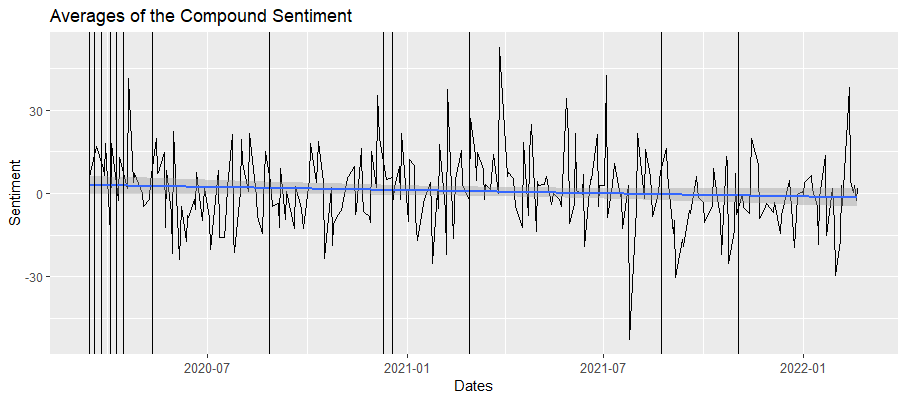

Twitter Data Collection
Twitter is a social media platform, and the first tweet was tweeted out on March 21, 2006. The completed version went live in July 2006. Users can post small blurbs, called tweets, of what they are doing, and other users are allowed to see it and react it. Users can react by; liking the tweet, "retweeting" the tweet, or replying to the author.
Data Collection
I collected tweets from Twitter by scraping the platform. I used a library from GitHub called Twint, and since Twint only allows up to a week to be scraped, I needed to set up an algorithm that searched all weeks from March 14, 2020, to February 22, 2022. I did this by using a loop that stopped at the last week, and got every single date seven days after March 14, 2020. It then collected tweets, given a start date and end date. In total, this algorithm collected up to 514,283 tweets (after pruning for non-English tweets) and searching across eight different hashtags/keywords ("#Covid", "#COVID19", "#coronavirus", "#covid_19", "Covid", "COVID19", "coronavirus", "covid-19".) The data was then given to Duane to process for sentiment, and once the data was given sentiment values I was able to visualize the data here.
Findings - Data Visualization
Since the data had multiple values per day, graphing lines was not an option. I took the average of every single day that had tweets, with the help of Jacob Bellows, on Excel. The only days that were excluded were days that did not have tweets or were outside the date range.
Averages of the Compound Sentiment with Dates
This is the compound average. The compound score is the sum of positive, negative and neutral scores and normalized between -1 and +1. For the purposes of graphing, this number has been multiplied from -100 and +100. The more a score is closer to +100, the higher the positivity. However, the more a score is closer to -100, the higher the negativity. The graph has been given a regression line, to best describe the behavior of the data. We can see that there is a negative relationship about how Twitter feels about opinions concerning COVID-19 and time going on.
subsection about images
subsection
methods
also describe how i got these images
analysis
then describe what i found via these images
talk about what i found here
perhaps post screenshots of what R found